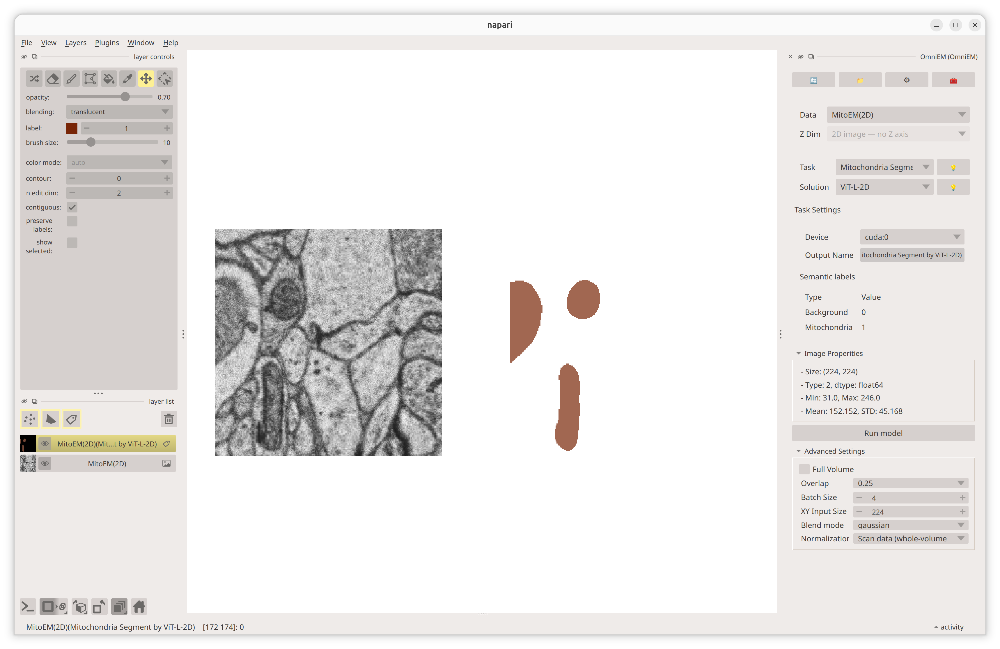

Mitochondria Segmentation
Task type
Image-to-Label
Overview
The Mitochondria Segmentation task classifies each pixel in an electron microscopy (EM) image. It provides a 2D slice-wise model trained on the CEM-MitoLab dataset and a volumetric 3D model trained on the MitoEM dataset.
This task outputs a labeled mask with the following classes:
- Background
- Mitochondria
Available solutions
1. ViT-L-2D
Configuration
- name: ViT-L-2D
datatypes: [2, 3]
img_z: 1
weights_head: head_mito-seg-ViT-L-2D.pt
backbone_tag: 4246a479
head_tag: 7c18ec1e
Characteristics
img_z = 1(2D model)-
Accepts:
- 2D input
- 3D input (processed slice by slice)
- No inter-slice fusion
- Suitable for fast inference and datasets without strong Z-continuity
Recommended use cases
- 2D EM slice segmentation
- Large-scale screening
- Datasets with uncertain Z-alignment consistency
2. ViT-L-3D
Configuration
- name: ViT-L-3D
datatypes: [3]
img_z: 16
weights_head: head_mito-seg-ViT-L-3D.pt
backbone_tag: 4246a479
head_tag: 2c5f8505
Characteristics
img_z = 16(3D model)- Accepts 3D input only
- Requires a Z-dimension of at least 16
Full Volume and the 3D model
With the ViT-L-3D model, Full Volume inference may produce boundary gaps between input blocks. Use sliding-window (tiled) mode to largely avoid this.
Output
The model produces a segmentation mask with:
| Label ID | Class Name |
|---|---|
| 0 | Background |
| 1 | Mitochondria |

Model selection guidance
| Scenario | Recommended Solution |
|---|---|
| Single 2D slice analysis | ViT-L-2D |
| Thin Z-stack (< 16 slices) | ViT-L-2D |
| Thick volumetric dataset (≥ 16 Z) | ViT-L-3D |
Choose the 3D model when volumetric coherence is important and sufficient Z-depth is available. Choose the 2D model for flexibility, speed, or datasets with limited Z-resolution.
Upcoming updates
We are actively improving the mitochondria segmentation models. Planned updates include:
-
Training on MitoEM 2.0 (3D model) We plan to train a new 3D segmentation model on the MitoEM 2.0 dataset to improve volumetric accuracy, robustness, and generalization across diverse EM imaging conditions.
-
Post-processing for cross-dimensional consistency We plan to introduce post-processing techniques that improve consistency between slice-wise 2D and volumetric 3D segmentation outputs.
These enhancements are intended to reduce inter-slice discontinuities and improve structural coherence in reconstructed 3D volumes.
These updates are planned for future versions of Napari-OmniEM.